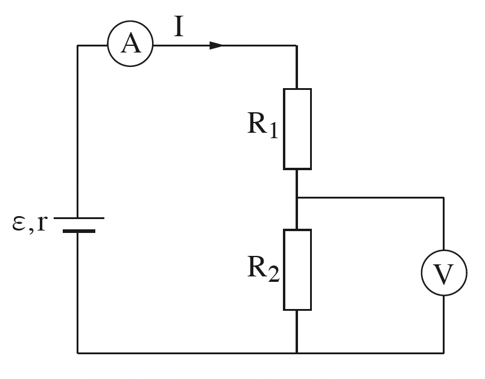
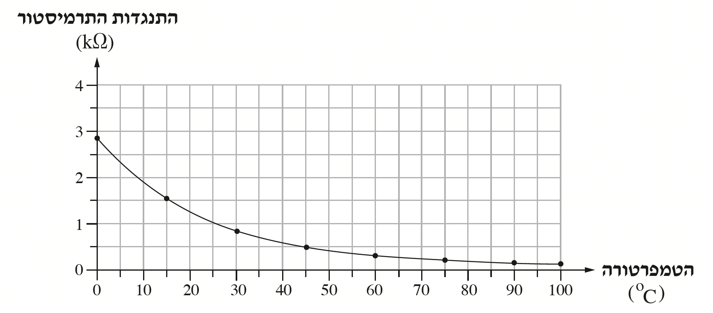

שאלה 2
בתרשים 1 שלפניכם מתואר מעגל חשמלי ובו מקור מתח שהכא"מ שלו ε = 90V והתנגדותו הפנימית r = 50Ω, נגד שהתנגדותו R1 = 1,000Ω, נגד שהתנגדותו R2, ושני מכשירי מדידה אידיאליים — וולטמטר ואמפרמטר.
שני הנגדים עשויים מאותו תיל מוליך, והם שונים זה מזה רק באורכם. האורך של הנגד R2 הוא 0.75 מאורכו של הנגד R1.

חשבו את ההתנגדות החיצונית של המעגל. (5 נקודות)
חשבו את הערך שמציג האמפרמטר ואת הערך שמציג הוולטמטר. (9 נקודות)
חשבו את כמות המטען העוברת דרך האמפרמטר במשך דקה אחת. (5 נקודות)
בתעשיית המזון צריך למדוד את הטמפרטורה של המזון. לשם כך משתמשים בתרמיסטור — רכיב חשמלי שהתנגדותו משתנה כפונקציה של הטמפרטורה.
את התרמיסטור מציבים במעגל החשמלי המתואר בתרשים 1 במקום הנגד R1.
התנגדותו של התרמיסטור כפונקציה של הטמפרטורה שלו מתוארת בתרשים 2.

את הטמפרטורה של התרמיסטור מחשבים על פי המתח שמציג הוולטמטר.
חשבו את הטמפרטורה של התרמיסטור כאשר הוריית הוולטמטר היא VR2 = 52V. (7 1⁄3 נקודות)
עתה מחזירים את הנגד R1 במקום התרמיסטור ומחליפים את הוולטמטר בוולטמטר שאינו אידיאלי.
האם הוריית האמפרמטר תגדל, תקטן או לא תשתנה? נמקו את קביעתכם. (7 נקודות)